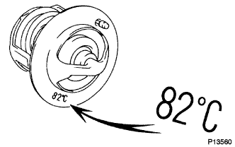
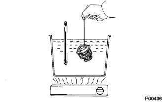
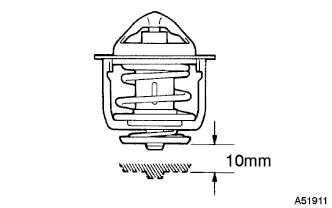

Thermostat (2GR-FE) Inspection |
| 1. Thermostat Inspection |
 |
 |
Immerse the thermostat in water and gradually heat the water.
Check the valve opening temperature.
 |
Check the valve lift.
Check that the valve is fully closed when the thermostat is at a low temperature (77°C or less).